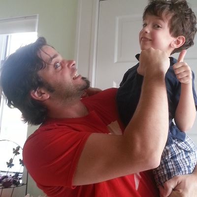
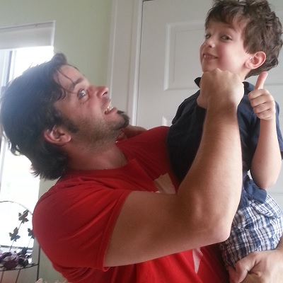

|
 Beantown Bullies |
96[+3] |
155[+10] |
19 / 5[+2] / [+0] |
280[+15] | |
  Harvard T Riders |
81[+3] |
151[+3] |
15 / 5[+2] / [+0] |
257[+8] | |
  Les Mandrilles de Sainte-Julie |
78[+1] |
154[+3] |
19 / 1[+1] / [+0] |
253[+5] | |
  Les Pouliches de Quebec |
93[+2] |
127[+4] |
19 / 4[+2] / [+0] |
247[+8] | |
  NEMROD au repos |
86[+1] |
128[+4] |
20 / 4[+1] / [+0] |
242[+6] | |
 Les Nordiques |
82[+2] |
126[+0] |
20 / 4[+1] / [+0] |
236[+3] | |
  Grand-Maman Laurette |
74[+0] |
142[+4] |
13 / 2[+0] / [+0] |
233[+4] | |
  Electrik Dawg |
71[+0] |
133[+2] |
20 / 4[+1] / [+0] |
232[+3] | |
↑ +2 |  The Majestics |
69[+1] |
150[+7] |
10 / 1[+0] / [+0] |
231[+8] |
  Les Bioniques |
78[+3] |
127[+2] |
15 / 5[+2] / [+0] |
230[+7] | |
↓ -2 |   Les Devils de Sherbrooke |
73[+1] |
132[+1] |
16 / 4[+2] / [+0] |
229[+4] |
  Hockey Gaga |
79[+3] |
127[+5] |
14 / 1[+1] / [+0] |
222[+9] | |
  Five Stars |
65[+0] |
124[+5] |
18 / 2[+1] / [+0] |
211[+6] | |
  Les Mamans Girafes |
65[+1] |
107[+3] |
18 / 2[+1] / [+0] |
194[+5] | |
| ||||||||||||||||||||||||||||||||||||||||||||||||||||||||||||||||||||||||||||||||||||||||||||||||||||||||||||||||||||||||||||||||||||||||||||||||||||||||||||||||||
| ||||||||||||||||||||||||||||||||||||||||||||||||||||||||||||||||||||||||||||||||||||||||||||||||||||||||||||||||||||||||||||||||||||||||||||||||||||||||||||||||||
| ||||||||||||||||||||||||||||||||||||||||||||||||||||||||||||||||||||||||||||||||||||||||||||||||||||||||||||||||||||||||||||||||||||||||||||||||||||||||||||||||||
| ||||||||||||||||||||||||||||||||||||||||||||||||||||||||||||||||||||||||||||||||||||||||||||||||||||||||||||||||||||||||||||||||||||||||||||||||||||||||||||||||||
| ||||||||||||||||||||||||||||||||||||||||||||||||||||||||||||||||||||||||||||||||||||||||||||||||||||||||||||||||||||||||||||||||||||||||||||||||||||||||||||||||||


Beantown Bullies | Evgeni Malkin G:4 , P:8 +1, Pts:12 +1 | Claude Giroux G:9 , P:10 , Pts:19 | Anze Kopitar G:8 , P:13 +1, Pts:21 +1 | |
| Brad Richards G:5 , P:7 , Pts:12 | Matt Duchene G:6 +1, P:7 , Pts:13 +1 | Phil Kessel G:12 , P:12 +1, Pts:24 +1 | ||
| Zach Parise G:5 , P:3 , Pts:8 | Jeff Skinner G:7 +1, P:10 +2, Pts:17 +3 | Milan Lucic G:8 , P:6 , Pts:14 | ||
| Patrice Bergeron G:3 , P:9 +1, Pts:12 +1 | Jamie Benn G:5 , P:14 +1, Pts:19 +1 | Marian Gaborik G:9 , P:6 , Pts:15 | ||
| Dustin Brown G:4 +1, P:7 , Pts:11 +1 | Michael Grabner G:5 , P:1 , Pts:6 | Jordan Eberle G:3 , P:8 , Pts:11 | ||
| Keith Yandle G:1 , P:8 , Pts:9 | Erik Karlsson G:1 , P:15 +1, Pts:16 +1 | Zdeno Chara G:1 , P:11 +2, Pts:12 +2 | ||
| Tim Thomas W:6 +1, SO:1 , Pts:8 +1 | Ryan Miller W:5 , SO:1 , Pts:7 | Jimmy Howard W:8 +1, SO:3 , Pts:14 +1 | ||
Harvard T Riders | Steven Stamkos G:10 , P:6 , Pts:16 | Henrik Sedin G:5 , P:14 , Pts:19 | Anze Kopitar G:8 , P:13 +1, Pts:21 +1 | |
| Nicklas Backstrom G:5 , P:15 , Pts:20 | Mike Richards G:4 , P:8 , Pts:12 | Jarome Iginla G:5 +1, P:4 , Pts:9 +1 | ||
| Martin Havlat G:1 , P:7 , Pts:8 | Patrick Marleau G:6 , P:8 , Pts:14 | Patrick Sharp G:5 , P:10 , Pts:15 | ||
| Patrice Bergeron G:3 , P:9 +1, Pts:12 +1 | Ryane Clowe G:4 , P:8 , Pts:12 | Derek Roy G:5 , P:7 , Pts:12 | ||
| Dustin Brown G:4 +1, P:7 , Pts:11 +1 | Ryan Callahan G:7 , P:2 , Pts:9 | Alexandre Burrows G:5 , P:3 , Pts:8 | ||
| Keith Yandle G:1 , P:8 , Pts:9 | Erik Karlsson G:1 , P:15 +1, Pts:16 +1 | Shea Weber G:2 +1, P:7 , Pts:9 +1 | ||
| Tim Thomas W:6 +1, SO:1 , Pts:8 +1 | Jonathan Quick W:7 +1, SO:3 , Pts:13 +1 | Jaroslav Halak W:2 , SO:1 , Pts:4 | ||
Les Mandrilles de Sainte-Julie | Daniel Sedin G:6 , P:16 , Pts:22 | Henrik Sedin G:5 , P:14 , Pts:19 | Jonathan Toews G:7 , P:6 , Pts:13 | |
| Nicklas Backstrom G:5 , P:15 , Pts:20 | Mike Richards G:4 , P:8 , Pts:12 | David Krejci G:3 , P:5 , Pts:8 | ||
| Pavel Datsyuk G:2 , P:8 , Pts:10 | Thomas Vanek G:11 +1, P:9 , Pts:20 +1 | Mike Ribeiro G:1 , P:10 +1, Pts:11 +1 | ||
| Patrice Bergeron G:3 , P:9 +1, Pts:12 +1 | Danny Briere G:4 , P:8 , Pts:12 | Jaromir Jagr G:6 , P:9 , Pts:15 | ||
| Tomas Plekanec G:4 , P:10 , Pts:14 | Ryan Callahan G:7 , P:2 , Pts:9 | Logan Couture G:6 , P:5 , Pts:11 | ||
| P.K. Subban G:0 , P:5 +1, Pts:5 +1 | Dion Phaneuf G:2 , P:10 , Pts:12 | Drew Doughty G:2 , P:5 , Pts:7 | ||
| Carey Price W:6 , SO:0 , Pts:6 | Henrik Lundqvist W:6 , SO:1 , Pts:8 | Miikka Kiprusoff W:7 +1, SO:0 , Pts:7 +1 | ||
Les Pouliches de Quebec | Alex Ovechkin G:7 , P:7 , Pts:14 | Claude Giroux G:9 , P:10 , Pts:19 | Eric Staal G:4 +1, P:3 +1, Pts:7 +2 | |
| Rick Nash G:4 , P:8 , Pts:12 | John Tavares G:8 , P:5 , Pts:13 | Phil Kessel G:12 , P:12 +1, Pts:24 +1 | ||
| Zach Parise G:5 , P:3 , Pts:8 | Alex Tanguay G:3 , P:9 +1, Pts:12 +1 | Patrick Sharp G:5 , P:10 , Pts:15 | ||
| Alexander Semin G:3 , P:5 , Pts:8 | Danny Briere G:4 , P:8 , Pts:12 | Marian Hossa G:8 , P:8 , Pts:16 | ||
| Tomas Plekanec G:4 , P:10 , Pts:14 | Ryan Callahan G:7 , P:2 , Pts:9 | Logan Couture G:6 , P:5 , Pts:11 | ||
| P.K. Subban G:0 , P:5 +1, Pts:5 +1 | Dion Phaneuf G:2 , P:10 , Pts:12 | Shea Weber G:2 +1, P:7 , Pts:9 +1 | ||
| Carey Price W:6 , SO:0 , Pts:6 | Jonathan Quick W:7 +1, SO:3 , Pts:13 +1 | Cam Ward W:6 +1, SO:1 , Pts:8 +1 | ||
NEMROD au repos | Steven Stamkos G:10 , P:6 , Pts:16 | Claude Giroux G:9 , P:10 , Pts:19 | Jonathan Toews G:7 , P:6 , Pts:13 | |
| Patrick Kane G:6 , P:11 , Pts:17 | Mike Richards G:4 , P:8 , Pts:12 | David Krejci G:3 , P:5 , Pts:8 | ||
| Pavel Datsyuk G:2 , P:8 , Pts:10 | Thomas Vanek G:11 +1, P:9 , Pts:20 +1 | Mike Ribeiro G:1 , P:10 +1, Pts:11 +1 | ||
| Vincent Lecavalier G:6 , P:6 , Pts:12 | Paul Stastny G:5 , P:6 , Pts:11 | Marian Gaborik G:9 , P:6 , Pts:15 | ||
| Tomas Plekanec G:4 , P:10 , Pts:14 | Michael Grabner G:5 , P:1 , Pts:6 | Jussi Jokinen G:3 , P:8 +2, Pts:11 +2 Blessé IR  | ||
| P.K. Subban G:0 , P:5 +1, Pts:5 +1 | Ryan Whitney G:0 , P:0 , Pts:0 Blessé genou - droit(e)  - a été placé sur la liste des blessés à long terme et sera absent pour trois semaines") | Kris Letang G:1 , P:13 , Pts:14 | ||
| Roberto Luongo W:6 , SO:0 , Pts:6 | Henrik Lundqvist W:6 , SO:1 , Pts:8 | Jimmy Howard W:8 +1, SO:3 , Pts:14 +1 | ||
Les Nordiques | Alex Ovechkin G:7 , P:7 , Pts:14 | Henrik Sedin G:5 , P:14 , Pts:19 | Sidney Crosby G:0 , P:0 , Pts:0 Blessé commotion cérébrale | |
| Patrick Kane G:6 , P:11 , Pts:17 | Matt Duchene G:6 +1, P:7 , Pts:13 +1 | Joe Pavelski G:9 , P:8 , Pts:17 | ||
| Pavel Datsyuk G:2 , P:8 , Pts:10 | Thomas Vanek G:11 +1, P:9 , Pts:20 +1 | Milan Lucic G:8 , P:6 , Pts:14 | ||
| Vincent Lecavalier G:6 , P:6 , Pts:12 | Paul Stastny G:5 , P:6 , Pts:11 | Derek Roy G:5 , P:7 , Pts:12 | ||
| Tomas Plekanec G:4 , P:10 , Pts:14 | Taylor Hall G:3 , P:7 , Pts:10 | Michael Cammalleri G:3 , P:4 , Pts:7 Blessé non spécifiée | ||
| Lubomir Visnovsky G:1 , P:3 , Pts:4 Blessé doigts | Ryan Whitney G:0 , P:0 , Pts:0 Blessé genou - droit(e) | Kris Letang G:1 , P:13 , Pts:14 | ||
| Roberto Luongo W:6 , SO:0 , Pts:6 | Ilya Bryzgalov W:6 , SO:1 , Pts:8 | Jimmy Howard W:8 +1, SO:3 , Pts:14 +1 | ||
Grand-Maman Laurette | Evgeni Malkin G:4 , P:8 +1, Pts:12 +1 | Henrik Sedin G:5 , P:14 , Pts:19 | Sidney Crosby G:0 , P:0 , Pts:0 Blessé commotion cérébrale | |
| Nicklas Backstrom G:5 , P:15 , Pts:20 | Joe Thornton G:4 , P:9 , Pts:13 | Phil Kessel G:12 , P:12 +1, Pts:24 +1 | ||
| Zach Parise G:5 , P:3 , Pts:8 | Patrick Marleau G:6 , P:8 , Pts:14 | Mike Ribeiro G:1 , P:10 +1, Pts:11 +1 | ||
| Vincent Lecavalier G:6 , P:6 , Pts:12 | Paul Stastny G:5 , P:6 , Pts:11 | Jaromir Jagr G:6 , P:9 , Pts:15 | ||
| Tomas Plekanec G:4 , P:10 , Pts:14 | Rene Bourque G:5 , P:0 , Pts:5 | Michael Cammalleri G:3 , P:4 , Pts:7 Blessé non spécifiée | ||
| P.K. Subban G:0 , P:5 +1, Pts:5 +1 | Dion Phaneuf G:2 , P:10 , Pts:12 | Kris Letang G:1 , P:13 , Pts:14 | ||
| Marc-Andre Fleury W:9 , SO:1 , Pts:11 | Martin Brodeur W:2 , SO:0 , Pts:2 | Jaroslav Halak W:2 , SO:1 , Pts:4 | ||
Electrik Dawg | Steven Stamkos G:10 , P:6 , Pts:16 | Henrik Sedin G:5 , P:14 , Pts:19 | Sidney Crosby G:0 , P:0 , Pts:0 Blessé commotion cérébrale | |
| Brad Richards G:5 , P:7 , Pts:12 | Joe Thornton G:4 , P:9 , Pts:13 | Jeff Carter G:0 , P:3 , Pts:3 Blessé pied - droit(e) | ||
| Zach Parise G:5 , P:3 , Pts:8 | Patrick Marleau G:6 , P:8 , Pts:14 | Patrick Sharp G:5 , P:10 , Pts:15 | ||
| Jason Spezza G:6 , P:11 , Pts:17 | Danny Briere G:4 , P:8 , Pts:12 | Marian Hossa G:8 , P:8 , Pts:16 | ||
| Tomas Plekanec G:4 , P:10 , Pts:14 | Taylor Hall G:3 , P:7 , Pts:10 | Michael Cammalleri G:3 , P:4 , Pts:7 Blessé non spécifiée | ||
| P.K. Subban G:0 , P:5 +1, Pts:5 +1 | Erik Karlsson G:1 , P:15 +1, Pts:16 +1 | Drew Doughty G:2 , P:5 , Pts:7 | ||
| Carey Price W:6 , SO:0 , Pts:6 | Henrik Lundqvist W:6 , SO:1 , Pts:8 | Jimmy Howard W:8 +1, SO:3 , Pts:14 +1 | ||
The Majestics | Alex Ovechkin G:7 , P:7 , Pts:14 | Henrik Sedin G:5 , P:14 , Pts:19 | Loui Eriksson G:9 +1, P:8 , Pts:17 +1 | |
| Ilya Kovalchuk G:2 , P:7 , Pts:9 Blessé non spécifiée | John Tavares G:8 , P:5 , Pts:13 | David Krejci G:3 , P:5 , Pts:8 | ||
| Zach Parise G:5 , P:3 , Pts:8 | Alex Tanguay G:3 , P:9 +1, Pts:12 +1 | Mike Ribeiro G:1 , P:10 +1, Pts:11 +1 | ||
| Patrice Bergeron G:3 , P:9 +1, Pts:12 +1 | Paul Stastny G:5 , P:6 , Pts:11 | Jaromir Jagr G:6 , P:9 , Pts:15 | ||
| Tomas Plekanec G:4 , P:10 , Pts:14 | Taylor Hall G:3 , P:7 , Pts:10 | Jussi Jokinen G:3 , P:8 +2, Pts:11 +2 Blessé IR | ||
| P.K. Subban G:0 , P:5 +1, Pts:5 +1 | Erik Karlsson G:1 , P:15 +1, Pts:16 +1 | Kris Letang G:1 , P:13 , Pts:14 | ||
| Carey Price W:6 , SO:0 , Pts:6 | Martin Brodeur W:2 , SO:0 , Pts:2 | Jaroslav Halak W:2 , SO:1 , Pts:4 | ||
Les Bioniques | Daniel Sedin G:6 , P:16 , Pts:22 | Martin St. Louis G:3 , P:11 , Pts:14 | Jonathan Toews G:7 , P:6 , Pts:13 | |
| Patrick Kane G:6 , P:11 , Pts:17 | Matt Duchene G:6 +1, P:7 , Pts:13 +1 | Jarome Iginla G:5 +1, P:4 , Pts:9 +1 | ||
| Dany Heatley G:5 , P:6 +1, Pts:11 +1 | Patrick Marleau G:6 , P:8 , Pts:14 | Patrick Sharp G:5 , P:10 , Pts:15 | ||
| Vincent Lecavalier G:6 , P:6 , Pts:12 | Paul Stastny G:5 , P:6 , Pts:11 | Derek Roy G:5 , P:7 , Pts:12 | ||
| Dustin Brown G:4 +1, P:7 , Pts:11 +1 | Rene Bourque G:5 , P:0 , Pts:5 | Michael Cammalleri G:3 , P:4 , Pts:7 Blessé non spécifiée | ||
| P.K. Subban G:0 , P:5 +1, Pts:5 +1 | Ryan Whitney G:0 , P:0 , Pts:0 Blessé genou - droit(e) | Kris Letang G:1 , P:13 , Pts:14 | ||
| Tim Thomas W:6 +1, SO:1 , Pts:8 +1 | Jonathan Quick W:7 +1, SO:3 , Pts:13 +1 | Jaroslav Halak W:2 , SO:1 , Pts:4 | ||
Les Devils de Sherbrooke | Daniel Sedin G:6 , P:16 , Pts:22 | Henrik Sedin G:5 , P:14 , Pts:19 | Sidney Crosby G:0 , P:0 , Pts:0 Blessé commotion cérébrale | |
| Patrick Kane G:6 , P:11 , Pts:17 | Joe Thornton G:4 , P:9 , Pts:13 | Jarome Iginla G:5 +1, P:4 , Pts:9 +1 | ||
| Pavel Datsyuk G:2 , P:8 , Pts:10 | Patrick Marleau G:6 , P:8 , Pts:14 | Patrick Sharp G:5 , P:10 , Pts:15 | ||
| Alexander Semin G:3 , P:5 , Pts:8 | Paul Stastny G:5 , P:6 , Pts:11 | Jaromir Jagr G:6 , P:9 , Pts:15 | ||
| Tomas Plekanec G:4 , P:10 , Pts:14 | Michael Grabner G:5 , P:1 , Pts:6 | Michael Cammalleri G:3 , P:4 , Pts:7 Blessé non spécifiée | ||
| Nicklas Lidstrom G:6 , P:6 +1, Pts:12 +1 | Kevin Bieksa G:1 , P:4 , Pts:5 | Duncan Keith G:1 , P:7 , Pts:8 | ||
| Tim Thomas W:6 +1, SO:1 , Pts:8 +1 | Martin Brodeur W:2 , SO:0 , Pts:2 | Jimmy Howard W:8 +1, SO:3 , Pts:14 +1 | ||
Hockey Gaga | Alex Ovechkin G:7 , P:7 , Pts:14 | Ryan Getzlaf G:4 , P:5 , Pts:9 | Jonathan Toews G:7 , P:6 , Pts:13 | |
| Rick Nash G:4 , P:8 , Pts:12 | John Tavares G:8 , P:5 , Pts:13 | Jarome Iginla G:5 +1, P:4 , Pts:9 +1 | ||
| Pavel Datsyuk G:2 , P:8 , Pts:10 | Jeff Skinner G:7 +1, P:10 +2, Pts:17 +3 | Mike Ribeiro G:1 , P:10 +1, Pts:11 +1 | ||
| Vincent Lecavalier G:6 , P:6 , Pts:12 | Paul Stastny G:5 , P:6 , Pts:11 | Jaromir Jagr G:6 , P:9 , Pts:15 | ||
| Tomas Plekanec G:4 , P:10 , Pts:14 | Ryan Callahan G:7 , P:2 , Pts:9 | Michael Cammalleri G:3 , P:4 , Pts:7 Blessé non spécifiée | ||
| P.K. Subban G:0 , P:5 +1, Pts:5 +1 | Erik Karlsson G:1 , P:15 +1, Pts:16 +1 | Shea Weber G:2 +1, P:7 , Pts:9 +1 | ||
| Carey Price W:6 , SO:0 , Pts:6 | Martin Brodeur W:2 , SO:0 , Pts:2 | Cam Ward W:6 +1, SO:1 , Pts:8 +1 | ||
Five Stars | Corey Perry G:6 , P:5 , Pts:11 | Henrik Sedin G:5 , P:14 , Pts:19 | Anze Kopitar G:8 , P:13 +1, Pts:21 +1 | |
| Brad Richards G:5 , P:7 , Pts:12 | Mike Richards G:4 , P:8 , Pts:12 | David Krejci G:3 , P:5 , Pts:8 | ||
| Dany Heatley G:5 , P:6 +1, Pts:11 +1 | Mikko Koivu G:1 , P:9 +1, Pts:10 +1 | Mike Ribeiro G:1 , P:10 +1, Pts:11 +1 | ||
| Chris Stewart G:3 , P:2 , Pts:5 | Paul Stastny G:5 , P:6 , Pts:11 | Derek Roy G:5 , P:7 , Pts:12 | ||
| Mikhail Grabovski G:5 , P:5 , Pts:10 | Taylor Hall G:3 , P:7 , Pts:10 | Michael Cammalleri G:3 , P:4 , Pts:7 Blessé non spécifiée | ||
| P.K. Subban G:0 , P:5 +1, Pts:5 +1 | Mark Giordano G:2 , P:4 , Pts:6 | Duncan Keith G:1 , P:7 , Pts:8 | ||
| Carey Price W:6 , SO:0 , Pts:6 | Henrik Lundqvist W:6 , SO:1 , Pts:8 | Cam Ward W:6 +1, SO:1 , Pts:8 +1 | ||
Les Mamans Girafes | Steven Stamkos G:10 , P:6 , Pts:16 | Henrik Sedin G:5 , P:14 , Pts:19 | Jonathan Toews G:7 , P:6 , Pts:13 | |
| Ilya Kovalchuk G:2 , P:7 , Pts:9 Blessé non spécifiée | Bobby Ryan G:5 , P:3 , Pts:8 | David Krejci G:3 , P:5 , Pts:8 | ||
| Martin Havlat G:1 , P:7 , Pts:8 | Mikko Koivu G:1 , P:9 +1, Pts:10 +1 | Milan Lucic G:8 , P:6 , Pts:14 | ||
| Alexander Semin G:3 , P:5 , Pts:8 | Danny Briere G:4 , P:8 , Pts:12 | Ales Hemsky G:0 , P:4 , Pts:4 | ||
| Dustin Brown G:4 +1, P:7 , Pts:11 +1 | Ryan Callahan G:7 , P:2 , Pts:9 | Jussi Jokinen G:3 , P:8 +2, Pts:11 +2 Blessé IR | ||
| Lubomir Visnovsky G:1 , P:3 , Pts:4 Blessé doigts | Ryan Whitney G:0 , P:0 , Pts:0 Blessé genou - droit(e) | Duncan Keith G:1 , P:7 , Pts:8 | ||
| Carey Price W:6 , SO:0 , Pts:6 | Ilya Bryzgalov W:6 , SO:1 , Pts:8 | Cam Ward W:6 +1, SO:1 , Pts:8 +1 | ||